| Version 6.0.3 |
 Video: Abhängigkeiten
Video: Abhängigkeiten
Dieses Kapitel erklärt das Abhängigkeiten Konzept von QF-Test. Dieses Konzept ist für die Erstellung robuster Testfälle sowie für das Recovery Management sehr wichtig. Abhängigkeiten wurden eingeführt, um sicherzustellen, dass jeder Testfall mit erfüllten Vorbedingungen laufen kann.
Die Beispiele aus diesem Kapitel finden Sie in der Testsuite
qftest-6.0.3/doc/tutorial/advanced-demos/de/dependencies.qft.
Des weiteren gibt es noch eine zweite Testsuite
qftest-6.0.3/doc/tutorial/advanced-demos/de/dependencies_work.qft,
die Sie für die Erstellung der Beispiele verwenden können.
Bitte achten Sie darauf, dass Sie alle Testsuiten vorher in einen projektspezifischen Ordner kopieren und diese dort modifizieren.
Bitte kopieren Sie die Testsuite
qftest-6.0.3/doc/tutorial/advanced-demos/de/dependencies_work.qft
in ein projektspezifisches Verzeichnis und öffnen diese.
Werfen Sie einen Blick auf den ersten 'Testfallsatz' 'Rabattstufen
Tests'. Dieser enthält drei 'Testfall' Knoten und eine
'Vorbereitung', sowie einmal 'Aufräumen', um das SUT vor
jedem 'Testfall' zu starten bzw. zu stoppen. Das ist ein typisches
Beispiel, wie Testsuiten in Projekten aussehen können.
|
| 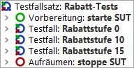 | ||
|
| Abbildung 29.1: Erster 'Testfallsatz' von dependencies_work.qft | ||
Angenommen, wir wollen nur einen speziellen 'Testfall' starten, weil genau dieser einen Defekt verifiziert oder dieser beim letzten Lauf fehlerhaft war. Dafür müssten wir entweder den gesamten 'Testfallsatz' ausführen oder dafür sorgen, dass alle Vorbedingungen erfüllt sind, d.h. die einzelnen 'Vorbereitung' Knoten müssten manuell ausgeführt werden.
Diese Situation passiert sehr häufig, ist allerdings nicht einfach aufzulösen mit den jetzt bekannten Mitteln. Für solche Fälle liefert QF-Test das 'Abhängigkeiten' Konzept. Es erleichtert die Verwaltung von Vorbedingungen und erlaubt es einen 'Testfall' einzeln zu starten. In diesem Fall wird QF-Test die Kontrolle über die Sicherstellung der Vorbedingungen übernehmen, also z.B. das SUT starten oder ein Fahrzeugmodell selektieren.
Eine 'Abhängigkeit' kann einen 'Vorbereitung', einen 'Aufräumen', einen 'Fehlerbehandlung' und einen 'Catch' Knoten beinhalten. Die 'Vorbereitung' einer 'Abhängigkeit' wird vor jedem 'Testfall' ausgeführt, damit immer sichergestellt ist, dass die Vorbedingungen des jeweiligen Testfalles erfüllt sind. Das Sicherstellen der Vorbedingungen ist ein sehr wichtiger Aspekt für eine robuste und stabile Testausführung. Sie können sich eine Situation vorstellen, in der ein 'Testfall' das SUT beendet und daher der darauffolgende 'Testfall' das SUT wieder starten muss. Genau für diese Situationen liefert das 'Abhängigkeit' Konzept eine stabile und attraktive Lösung.
Der zweite Aspekt des 'Abhängigkeiten' Konzeptes ist die Optimierung der Testausführung. Mit den bisherigen Mitteln mussten wir das SUT vor jedem Testfall starten und nach jedem Testfall stoppen. Dies ist für kleinere Applikationen wie dem JCarConfigurator auch kein Problem, aber stellen Sie sich das für eine große Applikation, wie eine Eclipse/RCP Anwendung oder ein ERP System, vor. Hier könnte dieses Vorgehen ziemlich ineffizient werden. Genau deshalb wird bei 'Abhängigkeiten' die 'Aufräumen' nur bei Bedarf ausgeführt.
Ein weiterer Vorteil von 'Abhängigkeiten' sind globale 'Fehlerbehandlung' und 'Catch' Knoten für die Implementierung von Recovery Management Schritten. Dieses Feature ist besonders dann wichtig, wenn Sie viele Testfälle hintereinander ausführen und ein fehlerhafter die Ausführung der darauffolgenden behindern kann, z.B. durch das Erscheinen eines modalen Fehlerdialoges wie 'OutOfMemoryException'.
Zusammengefasst sind 'Abhängigkeiten':
Die folgenden Abschnitte zeigen, wie man 'Abhängigkeiten' anlegt und benutzt.
Bitte kopieren Sie die Testsuite
qftest-6.0.3/doc/tutorial/advanced-demos/de/dependencies_work.qft
in ein projektspezifisches Verzeichnis und öffnen diese, falls Sie das nicht ohnehin schon getan haben sollten.
Diese Datei enthält einen 'Testfallsatz' 'Rabatt-Tests' mit drei 'Testfälle' und der herkömmlichen Implementierung von 'Vorbereitung' und 'Aufräumen' Knoten. Wir werden nun in diesen 'Testfallsatz' eine 'Abhängigkeit' einbauen.
|
| |||
|
| Abbildung 29.2: Erster 'Testfallsatz' von dependencies_work.qft | ||
Zuerst müssen wir einen 'Abhängigkeit' Knoten einfügen. Dies macht man mittels Rechtsklick auf den 'Testfallsatz' und Auswahl von »Knoten einfügen«-»Abhängigkeiten«-»Abhängigkeit«. Geben Sie der 'Abhängigkeit' einen Namen, z.B. "SUT gestartet".
Der nächste Schritt ist das Verschieben der 'Vorbereitung' und 'Aufräumen' Sequenzen in diese 'Abhängigkeit'. Hierfür müssen Sie den 'Abhängigkeit' Knoten öffnen und die entsprechenden Knoten hineinschieben. Das können Sie entweder via Drag and Drop oder Rechtsklick »Ausschneiden« und »Einfügen« oder mittels [Ctrl-X] und [Ctrl-V].
Die Testsuite sollte nun so aussehen:
|
| 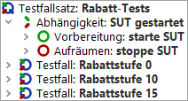 | ||
|
| Abbildung 29.3: Beispiel Testsuite mit der ersten 'Abhängigkeit' | ||
Jetzt wollen wir die 'Abhängigkeit' testen. Stoppen Sie bitte vorher alle laufenden SUTs. Dann selektieren Sie einen 'Testfall', z.B. 'Rabattstufe 10' und starten diesen.
Sie sollten nun sehen, dass der 'Testfall' ausgeführt wurde und das SUT am Ende des Testlaufes nicht gestoppt wurde. Bitte öffnen Sie das Protokoll um nachzusehen, was genau passiert ist.
|
| 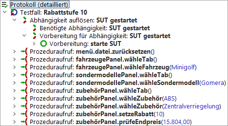 | ||
|
| Abbildung 29.4: Das Protokoll der Ausführung | ||
Wenn Sie im Protokoll den 'Testfall' öffnen, dann sehen Sie einen 'Abhängigkeiten auflösen' Knoten. Wenn Sie diesen öffnen, werden Sie zwei weitere Knoten sehen. Der letzte der beiden Knoten zeigt Ihnen, dass die 'Vorbereitung' Sequenz ausgeführt wurde. Der erste Knoten wird im nächsten Beispiel erklärt.
Bis jetzt haben wir gesehen, dass die 'Vorbereitung' Sequenz automatisch vor dem 'Testfall' ausgeführt wird. Jedoch wurde 'Aufräumen' noch nicht ausgeführt. Wenn Sie jetzt einen weiteren 'Testfall' starten, z.B. 'Rabattstufe 15', wird dieser auf der bereits gestarteten Anwendung ausgeführt.
Die 'Vorbereitung' einer 'Abhängigkeit' wird auf jeden
Fall vor jedem 'Testfall' ausgeführt. Dies geschieht um die
Vorbedingungen jedes einzelnen 'Testfall''s sicherzustellen. Das
'Aufräumen' einer 'Abhängigkeit' wird nur bei Bedarf
ausgeführt, d.h. nur dann, wenn die Schritte der 'Vorbereitung'
nicht mehr benötigt werden. In unserem Fall wurde das
'Aufräumen' nicht ausgeführt, weil beide Testfälle dieselbe
'Abhängigkeit' haben. Die Testausführung liefert allerdings keine Fehler,
weil die 'Prozedur' startStop.starteApplikation bereits prüft,
ob das SUT überhaupt gestartet werden
soll.
|
| 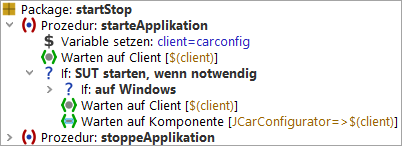 | ||
|
| Abbildung 29.5: 'Prozedur' startStop.starteApplikation | ||
Der nächste Schritt ist, den gesamten 'Testfallsatz' mittels Klick auf 'Wiedergabe starten' auszuführen.
Alle drei Testfälle sollten erfolgreich durchgelaufen sein und das SUT sollte auch nicht zwischen den Ausführungen gestoppt worden sein. Wir haben also auch die Testausführung optimiert. Die 'Aufräumen' wurde nicht ausgeführt, da alle drei Testfälle auf dieselbe 'Abhängigkeit' verweisen. Somit sieht unsere Testumgebung auch mehr nach einer realen Umgebung aus, da die wenigsten Benutzer das SUT nach jeder Aktion neu starten werden.
Das nächste Ziel ist, unsere 'Abhängigkeit' für andere 'Testfallsätze' unseres Projektes verfügbar zu machen. Hierfür müssen wir die 'Abhängigkeit' in den 'Prozeduren' Bereich verschieben. Danach müssen wir auf den 'Testfallsatz' klicken und eine 'Bezug auf Abhängigkeit' einfügen. Dies macht man mittels Rechtsklick und Auswahl von »Knoten einfügen«-»Abhängigkeiten«-»Bezug auf Abhängigkeit«. Der erscheinende Dialog sieht dann dem 'Prozeduraufruf' Dialog ziemlich ähnlich. Wählen Sie die gerade verschobene 'Abhängigkeit' aus. Die Testsuite sollte nun wie folgt aussehen:
|
| 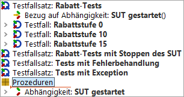 | ||
|
| Abbildung 29.6: Die Testsuite mit 'Bezug auf Abhängigkeit' | ||
Wir empfehlen alle 'Abhängigkeiten' in ein separates 'Package' 'abhängigkeiten' zu schieben.
Wenn Sie nun den 'Testfallsatz' ausführen, wird bei der ersten Ausführung nach Verschieben der 'Abhängigkeit' das SUT gestoppt und das SUT wiederum gestartet. Das passiert, weil die 'Abhängigkeit' in den 'Prozeduren' Bereich verschoben wurde und es deshalb eine andere 'Abhängigkeit' ist als vorher.
Werfen Sie nun einen Blick auf den zweiten 'Testfallsatz' der Demotestsuite 'Rabatt-Tests mit Stoppen des SUT'. Der zweite 'Testfall' 'Rabattstufe 10' stoppt das SUT, jedoch benötigt der dritte 'Testfall' 'Rabattstufe 15' auch ein laufendes SUT. Wie wir in diesem Abschnitt gelernt haben, wird das 'Abhängigkeiten' Konzept dafür Sorge tragen, dass das SUT vor dem dritten 'Testfall' ausgeführt wird. Dieses Beispiel sollte noch einmal die Vorteile von 'Abhängigkeiten' verdeutlichen.
|
| 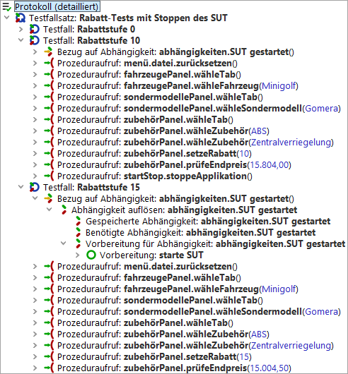 | ||
|
| Abbildung 29.7: Sicherstellen der Vorbedingungen für 'Testfall' 'Rabattstufe 15' | ||
Verwalten von Vorbedingungen kann ein durchaus komplexeres Thema werden, als dass wir nur Sicherstellen, ob das SUT gestartet wurde oder nicht. In vielen Projekten gibt es verschiedene Gruppen von Testfällen mit unterschiedlichen Vorbedingungen.
Nehmen wir an, dass wir ein großes ERP System mit mehreren Perspektiven, wie 'Anbieter' und 'Artikel' testen möchten. Jeder Testfall für die 'Anbieter' Perspektive bezieht sich darauf, dass die 'Anbieter' Perspektive auch geöffnet ist. Genauso verhält es sich bei allen Tests für die 'Artikel' Perspektive. Das Öffnen der jeweiligen Perspektive hängt wiederum vom eingeloggten Benutzer ab, und das Einloggen basiert auf einem gestarteten SUT. Sie sehen also, es gibt so etwas wie einen Baum von Vorbedingungen.
QF-Test ermöglicht es dem Benutzer, solch verschachtelte 'Abhängigkeit' Knoten zu erstellen. Hierfür muss man 'Bezug auf Abhängigkeit' Knoten zu einer 'Abhängigkeit' hinzufügen. Wir werden nun ein kleines Beispiel mit zwei verschachtelten 'Abhängigkeiten' für den JCarConfigurator bauen.
Im JCarConfigurator können Sie den 'Fahrzeuge' Dialog mittels der Menüaktion 'Einstellungen' -> 'Fahrzeuge' öffnen. Wir wollten jetzt Tests für diesen Dialog erstellen. Später werden wir auch Tests für den 'Zubehör' Dialog erstellen, welcher auch über das Menü mittels 'Einstellungen' -> 'Zubehör' geöffnet werden kann.
Zuerst definieren wir die Tests, welche wir erstellen wollen.
Testfall 1: Anlegen des Modells 'test1' mit Preis '100'.
Testfall 2: Anlegen des Modells 'test2' mit Preis '99999'.
Testfall 3: Anlegen des Zubehöres 'testzubehör' mit Preis '12'.
Wenn wir uns nun die Testschritte der oben definierten Testfälle genauer anschauen, sehen wir, dass jeder Testfall ein laufendes SUT benötigt. Daher sollten wir eine 'Abhängigkeit' 'SUT gestartet' implementieren. Das Stoppen des SUT ist ein optionaler Schritt, der innerhalb des 'Aufräumen' Knotens dieser 'Abhängigkeit' implementiert werden kann. Diese 'Abhängigkeit' haben wir schon im vorigen Beispiel erstellt und können diese also wiederverwenden.
Der nächste Punkt ist, dass sowohl Testfall 1 wie auch Testfall 2 einen geöffneten Fahrzeugdialog benötigen. Da wir weitere Tests in diesem Bereich planen, sollten wir eine 'Abhängigkeit' 'Fahrzeugdialog geöffnet' erstellen. Diese sollte in der 'Vorbereitung' das Öffnen des Dialoges und in der 'Aufräumen' das Schließen mittels 'Abbrechen' beinhalten. Wir können diesen Dialog nur dann öffnen, wenn das SUT bereits läuft, deshalb ist diese 'Abhängigkeit' auch von der 'Abhängigkeit' 'SUT gestartet' abhängig. Die Implementierung der 'Fahrzeugdialog geöffnet' 'Abhängigkeit' sieht wie folgt aus:
|
| 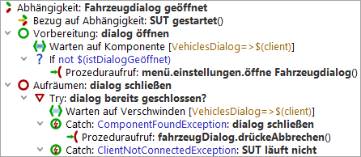 | ||
|
| Abbildung 29.8: 'Fahrzeugdialog geöffnet' 'Abhängigkeit' | ||
Hinweis In der 'Vorbereitung' müssen wir prüfen, ob der Dialog bereits geöffnet wurde. Es könnte nämlich sein, dass ein voriger Testfall den Dialog bereits geöffnet und nicht mehr geschlossen hat. Das Attribut 'Wartezeit' des 'Warten auf Komponente' Knotens steht hier auf '0', weil wir erwarten, dass der Dialog offen sein soll, wenn nicht, dann muss dieser ohnehin geöffnet werden.
Wir sollten auch eine 'Abhängigkeit' 'Zubehördialog geöffnet' erstellen, welche ähnlich zur 'Fahrzeugdialog geöffnet' 'Abhängigkeit', den Zubehördialog öffnet.
Nach Erstellen der Abhängigkeiten müssen wir nun die entsprechenden Testschritte aufzeichnen und die Testfälle erstellen. Die Testschritte wurden schon erstellt und können als 'Prozeduren' in der entsprechenden Dialog 'Packages' Struktur gefunden werden.
Die Testfälle sollten in einem 'Testfallsatz' namens 'Verschachtelte Abhängigkeiten' zusammengefasst erstellt werden. Dieser 'Testfallsatz' sollte zwei weitere 'Testfallsatz' beinhalten. Das erste ist 'Tests für den Fahrzeugdialog', das zweite 'Tests für den Zubehördialog'. Der 'Testfallsatz' 'Tests für den Fahrzeugdialog' beinhaltet die Implementierungen der Testfälle 1 und 2, sowie eine 'Bezug auf Abhängigkeit' auf die 'Fahrzeugdialog geöffnet' 'Abhängigkeit'. Der zweite 'Testfallsatz' 'Tests für den Zubehördialog' beinhaltet die Implementierung des Testfalles 3 und eine 'Bezug auf Abhängigkeit' auf die 'Abhängigkeit' 'Zubehördialog geöffnet'.
|
| 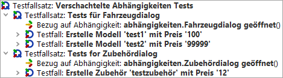 | ||
|
| Abbildung 29.9: Implementierung der Testfälle | ||
Wenn Sie nun den obersten 'Testfallsatz' starten, werden Sie sehen, dass QF-Test das SUT zuerst stoppt, das kommt von der 'Abhängigkeit' des vorherigen Beispieles. Danach wird das SUT gestartet und es werden die Schritte von Testfall 1 und Testfall 2 ausgeführt und schlussendlich die Schritte von Testfall 3. Wenn Sie im Protokoll einen genaueren Blick auf den Anfang von Testfall 3 werfen, dann werden Sie sehen, dass auch die 'Aufräumen' der 'Fahrzeugdialog geöffnet' 'Abhängigkeit' ausgeführt wurde. Dies passierte, weil die 'Abhängigkeit' 'Fahrzeugdialog geöffnet' nicht mehr benötigt wurde. Testfall 3 hat allerdings die 'Zubehördialog geöffnet' 'Abhängigkeit' benötigt und hat deshalb deren 'Vorbereitung' durchlaufen. Da diese beiden 'Abhängigkeiten' auf der 'SUT gestartet' 'Abhängigkeit' aufbauen, wurde deren 'Aufräumen' Sequenz nicht ausgeführt.
|
| 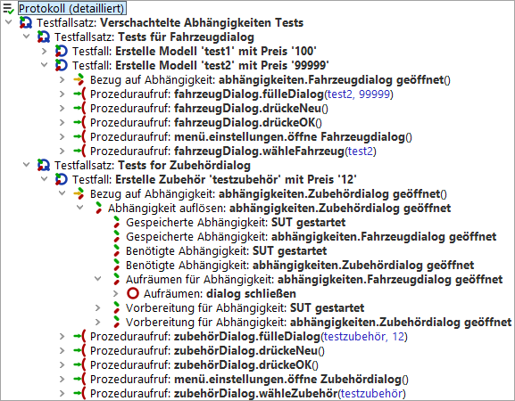 | ||
|
| Abbildung 29.10: Protokoll von verschachtelten 'Abhängigkeiten' | ||
Das Verschachteln von Abhängigkeiten und die Möglichkeit, eine 'Aufräumen' Sequenz nur bei Bedarf aufzurufen, ermöglichen Ihnen relativ viele vor- und nachbereitende Schritte in eine 'Abhängigkeit' zu packen. Ein anderer Anwendungsfall für den JCarConfigurator könnte eine 'Abhängigkeit' 'Fahrzeug angelegt' sein, welche sicherstellt, dass das verwendete Fahrzeug vorher angelegt wird.
Bitte kopieren Sie die Testsuite
qftest-6.0.3/doc/tutorial/advanced-demos/de/dependencies_work.qft
in ein projektspezifisches Verzeichnis und öffnen diese, falls Sie das nicht ohnehin schon getan haben sollten. Dort finden Sie einen 'Testfallsatz' 'Tests mit
Fehlerbehandlung'. Der zweite 'Testfall' ist fehlerhaft.
|
| 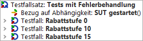 | ||
|
| Abbildung 29.11: Testsuite für 'Fehlerbehandlung' | ||
Angenommen wir wollen bestimmte Aktionen auslösen, die nach einem fehlerhaften Testfall ausgeführt werden sollen. In unserem Fall könnten wir im Fehlerfall einfach das SUT stoppen. Dies könnte notwendig sein, um zu garantieren, dass die folgenden Testfälle auf einer sauberen Umgebung aufsetzen können. Wir wissen bis jetzt, dass die 'Vorbereitung' Sequenz vor jedem 'Testfall' ausgeführt wird und die 'Aufräumen' nur bei Bedarf ausgeführt wird. Aber wie können wir jetzt diese spezielle Fehlerbehandlung implementieren?
Die Lösung ist der so genannte 'Fehlerbehandlung' Knoten für eine 'Abhängigkeit'. Wenn Sie auf die geschlossene 'Aufräumen' Sequenz klicken, können Sie mit Rechtsklick »Knoten einfügen«-»Abhängigkeiten«-»Fehlerbehandlung«.
Im 'Fehlerbehandlung' Knoten können
Sie die Schritte für das Stoppen
des SUT aufrufen. Die
'Abhängigkeit' SUT gestartet sollte nun wie folgt aussehen:
|
| 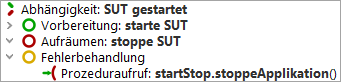 | ||
|
| Abbildung 29.12: 'Abhängigkeit' mit 'Fehlerbehandlung' | ||
Führen Sie nun den gesamten 'Testfallsatz' 'Tests mit Fehler' aus und öffnen Sie das Protokoll nachdem die Ausführung abgeschlossen ist.
Im Protokoll können Sie sehen, dass der 'Fehlerbehandlung' Knoten nach dem zweiten 'Testfall' ausgeführt wurde.
|
| 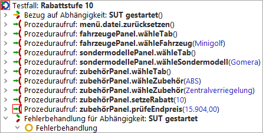 | ||
|
| Abbildung 29.13: Protokoll einer 'Abhängigkeit' mit 'Fehlerbehandlung' | ||
Im vorigen Abschnitt haben wir gelernt, dass man mit 'Fehlerbehandlung' Knoten Schritte definieren kann, welche bei fehlerhaften 'Testfälle' ausgeführt werden. Neben Fehlern können allerdings auch Exceptions beim Testlauf auftreten. Eine Exception ist ein unerwartetes Verhalten während der Testausführung, z.B. ein Dialog erscheint und blockiert die Ausführung oder eine Komponente konnte nicht gefunden werden. Wie soll man mit solchen Exceptions umgehen?
In der Demotestsuite
dependencies_work.qft
finden Sie ein Beispiel 'Testfallsatz'
namens 'Tests mit Exception'.
Natürlich können Sie entsprechende Testschritte mit einem Try-Catch umrunden und eine dedizierte Exceptionbehandlung in jedem 'Testfall' implementieren. Im Beispiel 'Testfallsatz' wurde dies so implementiert. Dieser Ansatz kann jedoch zu viel Redundanz führen und die 'Testfälle' werden noch unleserlicher.
|
| 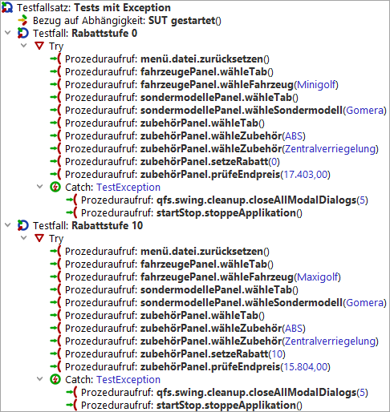 | ||
|
| Abbildung 29.14: Try-Catch Knoten in 'Testfälle' | ||
Unser Ziel ist es nun, die Redundanz in den Testfällen zu reduzieren und die einheitliche Exceptionbehandlung an eine zentrale Stelle zu verschieben. Diese zentrale Stelle wird unsere 'Abhängigkeit' sein.
Der erste Schritt hierfür ist das Einfügen des 'Catch' Knotens in eine 'Abhängigkeit'. Hierzu müssen Sie auf dem geschlossenen 'Fehlerbehandlung' Knoten einen Rechtsklick ausführen und »Knoten einfügen«-»Ablaufsteuerung«-»Catch« einfügen. Danach können wir die Schritte aus einem der 'Catch' Knoten in den neuen Knoten verschieben und in den 'Testfälle' die Prozeduraufrufe aus dem Try Block herausziehen und den Try Block dann löschen.
Die Testsuite sieht nun so aus:
|
| 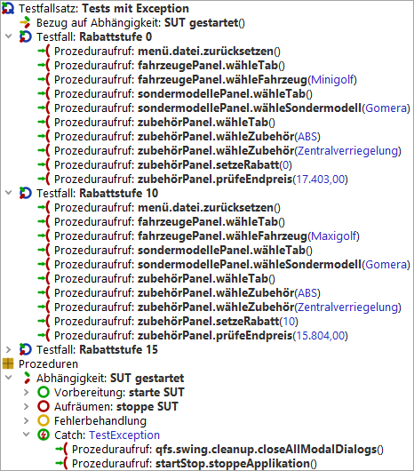 | ||
|
| Abbildung 29.15: Testsuite mit 'Catch' | ||
Nun können Sie den 'Testfallsatz' 'Tests mit Exception' starten. Der zweite 'Testfall' wirft eine IndexNotFoundException, weil das ausgewählte Modell nicht existiert. Diese Exception sollte nun vom globalen 'Catch' Knoten der 'Abhängigkeit' behandelt werden.
Hinweis Wenn Sie den Debugger aktiviert haben, wird QF-Test den Testlauf an der Stelle unterbrechen, wo die Exception auftritt. In unserem Fall können Sie dann die Exception mit dem Knopf 'Exception erneut werfen' weiterwerfen oder den Debugger mittels dem Menüeintrag »Debugger«-»Debugger aktivieren« deaktivieren.
Öffnen Sie nach der Ausführung das Protokoll um nachzusehen, was passiert ist.
|
| 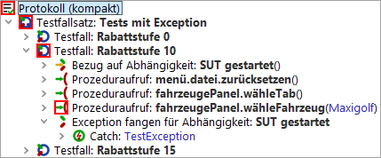 | ||
|
| Abbildung 29.16: Protokoll der Ausführung 'Abhängigkeit' mit 'Catch' | ||
In einem normalen Projekt sollten Sie
mindestens einen solchen global
'Catch' Knoten für
'TestException' erstellen. Dieser
Knoten sollte dann auch entweder
die Prozedur qfs.swing.cleanup.closeAllModalDialogs
oder die Prozedur
qfs.swt.cleanup.closeAllModalDialogsAndModalShells
aufrufen. Diese Prozeduren
schließen jeglichen modalen
Dialog, d.h. jedes Fenster, das
die Ausführung der Tests
blockieren könnte.
Sie haben nun gesehen, dass man ein robustes Recovery Management für Testfälle mittels 'Fehlerbehandlung' und noch mehr mittels 'Catch' Knoten für eine 'Abhängigkeit' implementieren kann.
In den meisten Projekten ist ein globaler 'Catch' Knoten sehr wichtig, besonders im Falle von ComponentNotFoundExceptions und ModalDialogExceptions.
Im oberen Bereich haben wir gesehen, dass man verschiedene Abhängigkeiten verschachteln kann und dass die 'Aufräumen' Sequenz einer 'Abhängigkeit' nur dann ausgeführt wird, wenn die entsprechende Abhängigkeit nicht mehr benötigt wird. Wir können eine 'Abhängigkeit' auch so konfigurieren, dass die 'Aufräumen' jedes mal ausgeführt wird. Das kann mittels Setzens der Option 'Aufräumen erzwingen' der 'Abhängigkeit' bewerkstelligt werden.
Es gibt noch viel mehr Interessantes über Abhängigkeiten zu entdecken, z.B. kann man die Ausführung der 'Aufräumen' auch mittels Variablen steuern. Diese Variable heißt charakteristische Variable. Diese und mehr Details finden Sie im Handbuch im Kapitel Abhängigkeiten. Dieser Ansatz könnte verwendet werden, um eine 'Abhängigkeit' 'Login' zu erstellen, deren 'Aufräumen', d.h. das Ausloggen, nur dann ausgeführt wird, wenn sich der Inhalt der Variable Benutzer ändert.
Eine detaillierte Beschreibung von Abhängigkeiten finden Sie im Handbuch im Kapitel Abhängigkeiten.
| Letzte Änderung: 6.9.2022 Copyright © 2002-2022 Quality First Software GmbH |